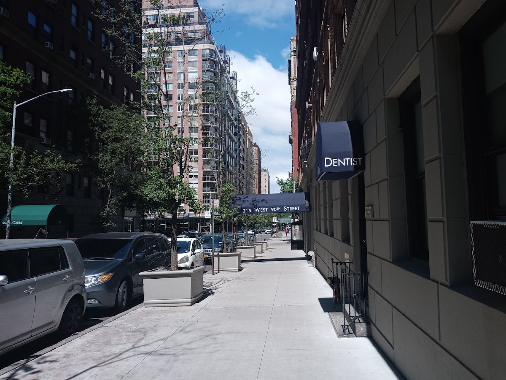
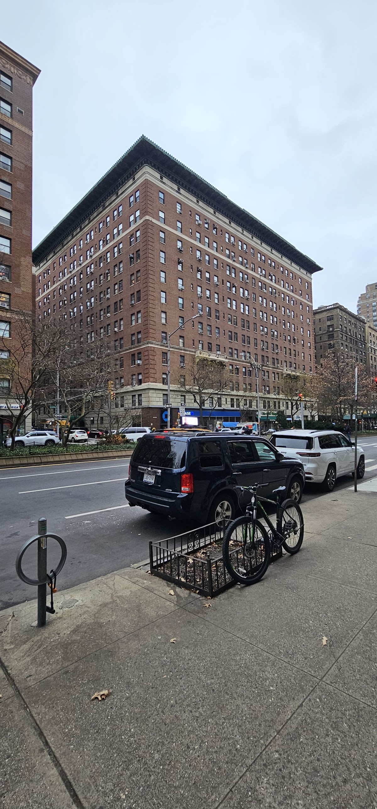
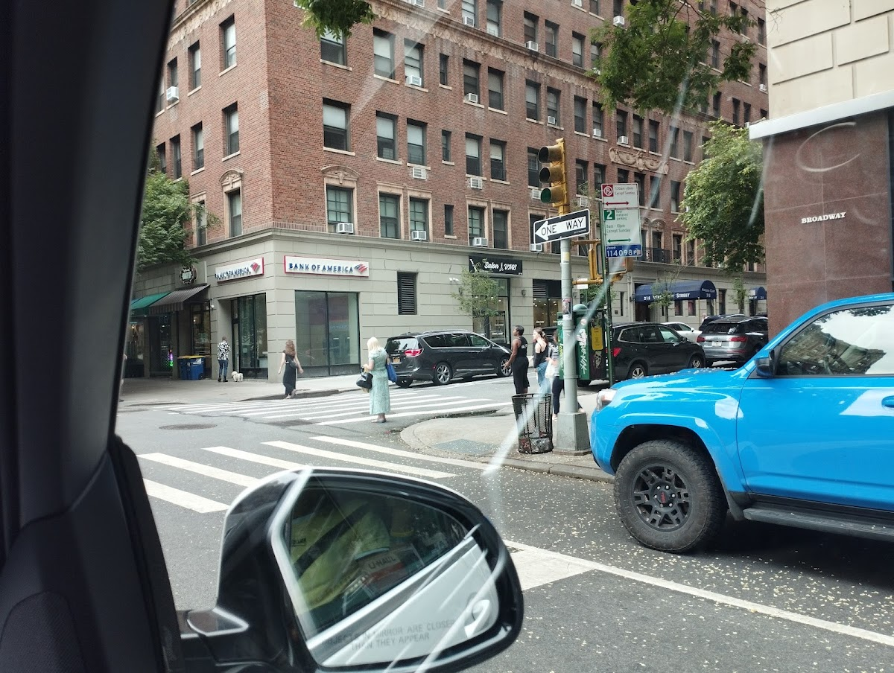
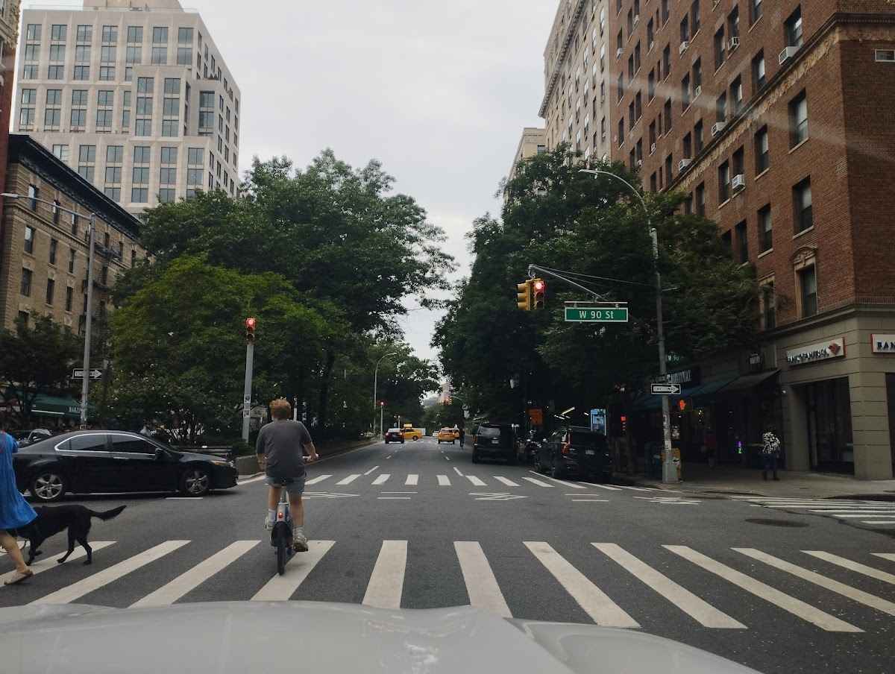
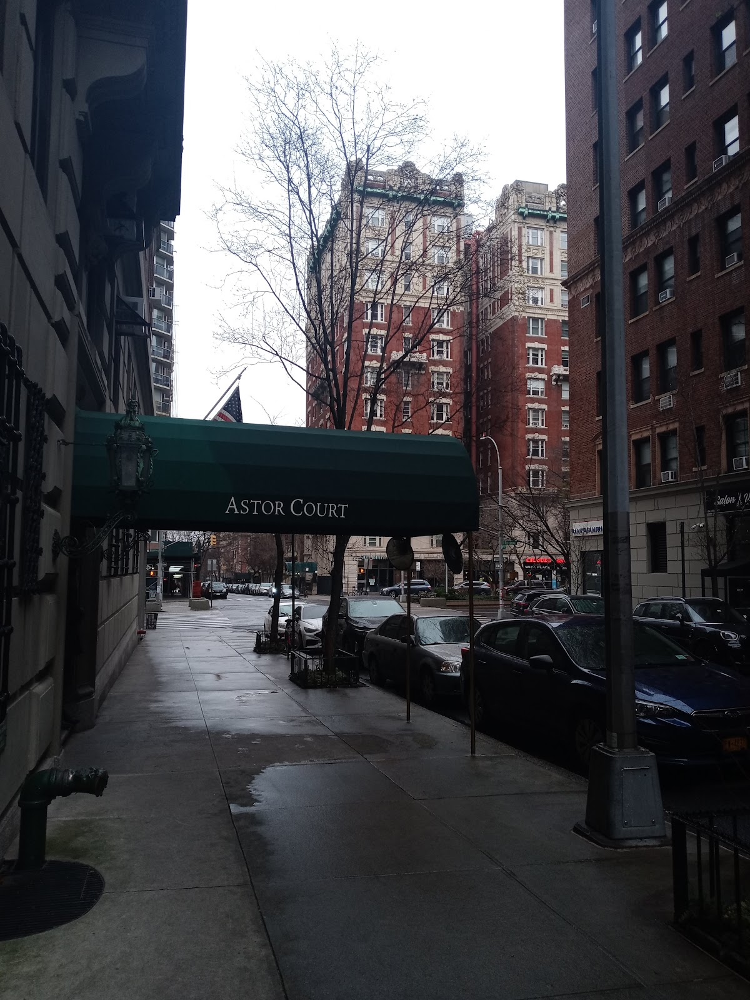

Shared spaces
210 W 90th (Astor Court)
A residential building on the Upper West Side of Manhattan, featuring a central courtyard.
Background
Astor Court was built in the early 20th century as part of the Astor family's real estate developments. The building's design includes a large central courtyard, providing residents with a private outdoor space. It is a notable example of early 20th-century apartment architecture in New York City.
Original AI-assisted background; not independently verified.
From the original map
This is what you are supposed to do. Make a park in the middle of the building. Amazing!
Homes and shared residential spaces may be private. View from public streets unless entry is clearly permitted; map pins are reference points, not confirmed entrances.
Nearby places
Straight-line distances, not walking routes.
Discussion & corrections





40.79031, -73.97422 · Explore the surrounding area ↗